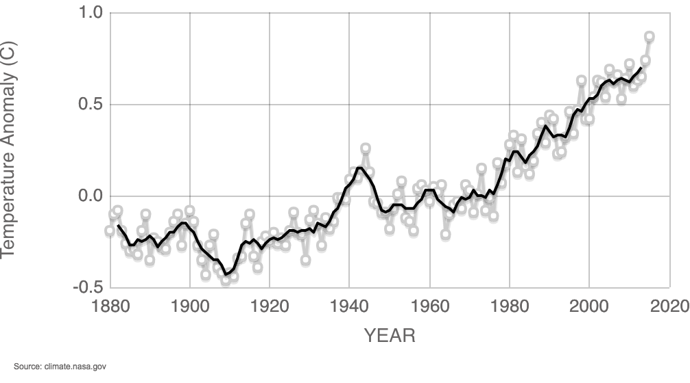

Уровень температуры Мирового океана 1880-2015
This graph illustrates the change in global surface temperature relative to 1951-1980 average temperatures. The 10 warmest years in the 134-year record all have occurred since 2000, with the exception of 1998. The year 2015 ranks as the warmest on record. (Source: NASA/GISS). This research is broadly consistent with similar constructions prepared by the Climatic Research Unit and the National Oceanic and Atmospheric Administration.